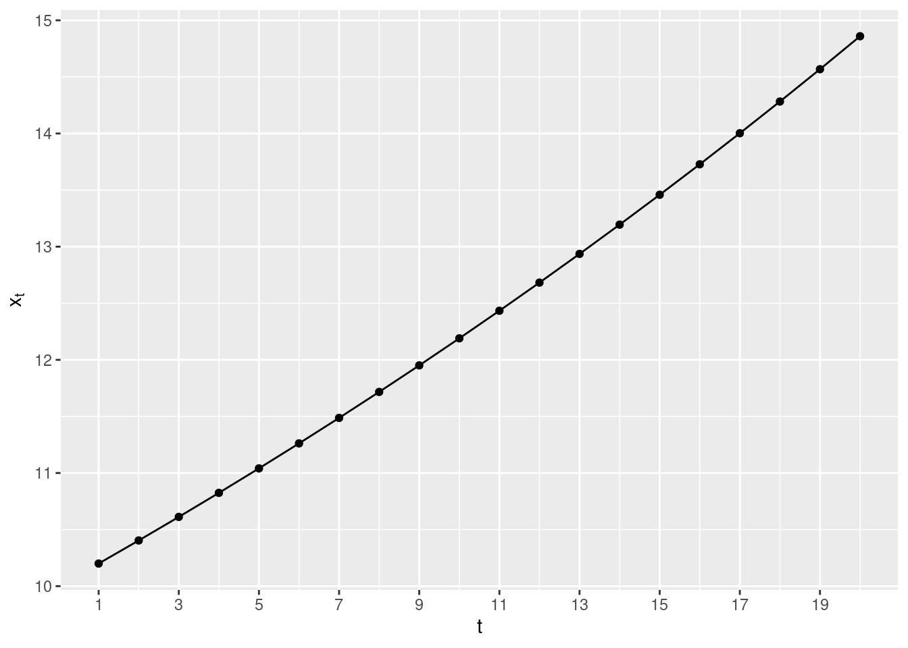
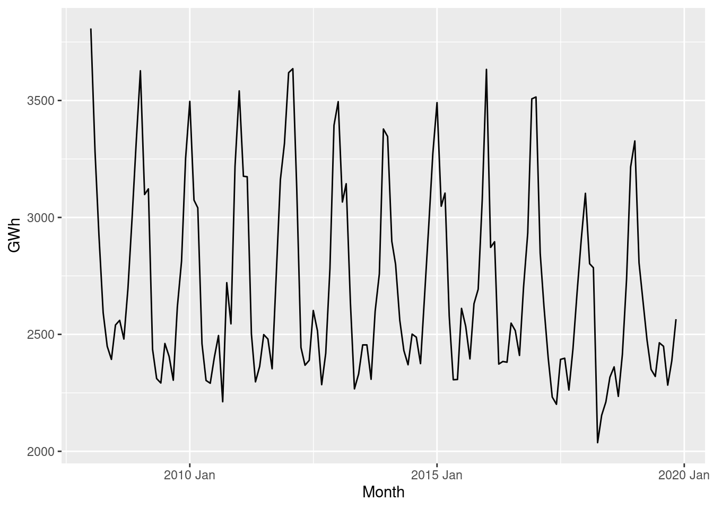
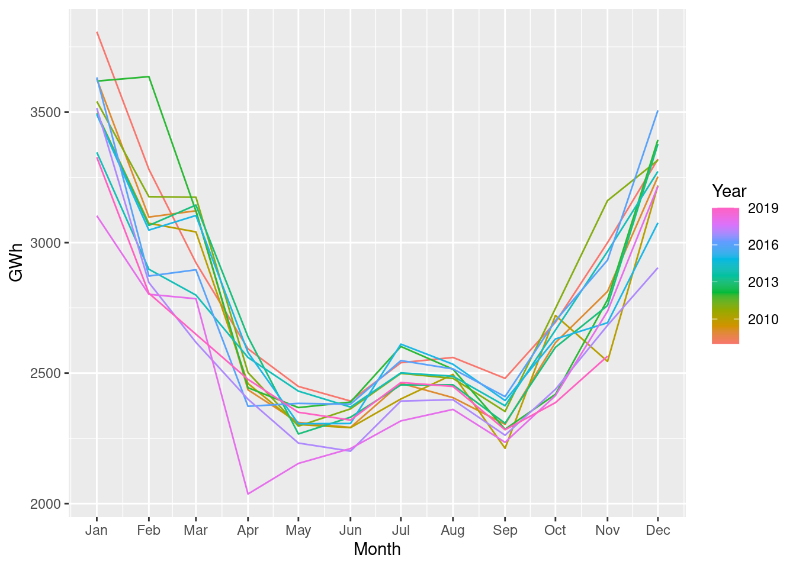
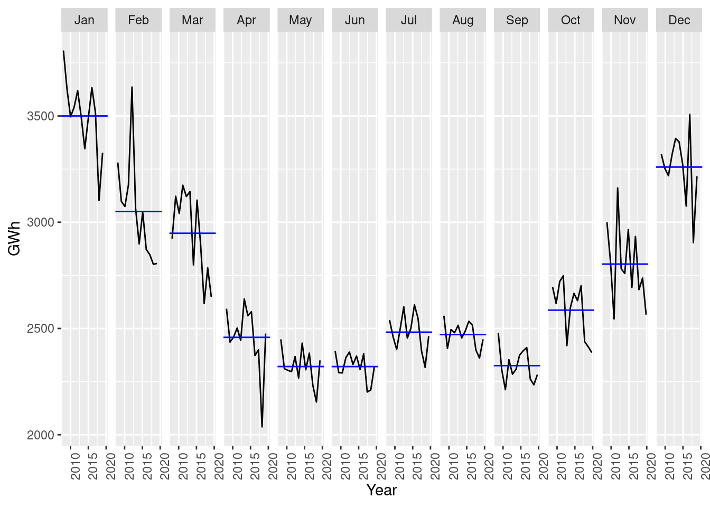
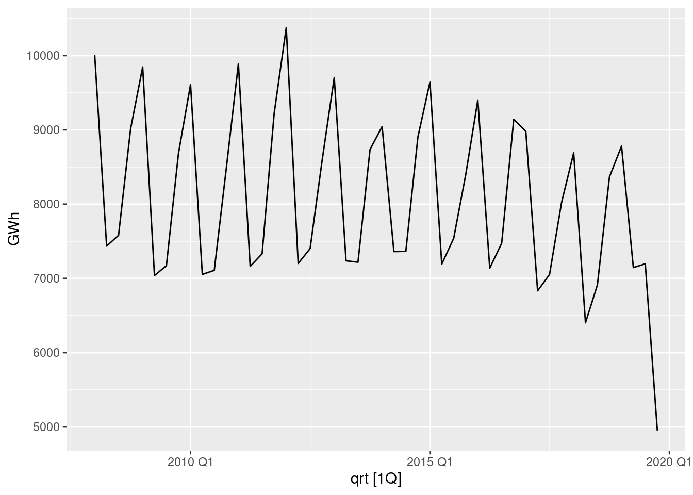

# install.packages(c(
# "tidyverse",
# "xts",
# "quantmod",
# "fable",
# "feasts",
# "tsibble",
# "lubridate",
# "tsbox",
# "eurostat"
# ))1 Introduction
For a very quick introduction to R, you can refer to the Introduction to Econometrics 2023 course. Wickham and Grolemund (2016) offer a more thorough introduction to the tidyverse packages in their R for data science book.
Sys.setlocale("LC_ALL","en_US.utf8")
library(tidyverse)
library(xts)
library(quantmod)
library(fable)
library(feasts)
library(tsibble)
library(lubridate)
library(eurostat)
library(tsbox)A time series is a sequence of values ordered by time. This course will focus on series that take values in \(\mathbb{R}\). Let \(x_1, x_2, \ldots, x_T\) be a sequence of values ordered by a time index \(t = 1,\ldots,T\). The value of the series is determined by:
\[ \begin{align} x_t & = (1 + 0.02)x_{t - 1},\quad x_0 = 10 \implies \\ x_t & = 10 \times(1 + 0.02)^{t} \\ \end{align} \tag{1.1}\]
Lets compute and plot the values of this sequence for \(t = 1,\ldots,20\).
dt <- tibble(
tidx = 1:20,
x = 10 *(1 + 0.02)^tidx
)
dt %>%
ggplot(aes(x = tidx, y = x)) +
geom_point() +
geom_line() +
scale_x_continuous(breaks = seq(1, 20, 2)) +
labs(
x = "t",
y = expression(x[t])
)
This series is an example of a deterministic sequence. For every point in time \(t\), you can use the formula in Equation 1.1 to compute the value of the series, e.g.:
\[ x_{7} = 1.02^{7}\times 10 \approx 11.487 \]
1.1 Date and Time objects in R
Internally, dates are stored as the number of days since a (arbitrary) reference (origin). The default origin in R is the first of January 1970.
origin <- as.Date("1970-01-01")
jan02.1970 <- as.Date("1970-01-02")
origin[1] "1970-01-01"jan02.1970[1] "1970-01-02"as.numeric(origin)[1] 0as.numeric(jan02.1970)[1] 1origin + 5[1] "1970-01-06"origin + 5:10[1] "1970-01-06" "1970-01-07" "1970-01-08" "1970-01-09" "1970-01-10"
[6] "1970-01-11"Time is stored as the number of seconds (and fractions of a second) since the origin: 1970-01-01 00:00:00 UCT. POSIX stands for Portable Operating System Interface.
origin_time <- as.POSIXct("1970-01-01 00:00:00", tz = "UCT")
some_other_time <- as.POSIXct("1970-01-01 00:01:00", tz = "UCT")
# Print the value of origin_time
origin_time[1] "1970-01-01 UTC"# Print the value of origin_time
some_other_time[1] "1970-01-01 00:01:00 UTC"# Print the numeric value of origin_time (seconds since the origin)
as.numeric(origin_time)[1] 0# Print the numeric value of some_other_time (seconds since the origin)
as.numeric(some_other_time)[1] 60class(origin_time)[1] "POSIXct" "POSIXt" The package lubridate provides utility functions for working with date and time objects. You can look at this online guide here.
# Sys.time returns the current time
now <- Sys.time()
# Print the value of now
now[1] "2023-12-06 14:29:16 UTC"# Day of the month
day(now)[1] 6# Day of the week (depends on the start of week assumption)
wday(now)[1] 4wday(now, week_start = 1)[1] 3# Day of the week as string (locale dependent)
wday(now, label = TRUE)[1] Wed
Levels: Sun < Mon < Tue < Wed < Thu < Fri < Sat# Day of the year
yday(now)[1] 340# Week of the year
week(now)[1] 49# Month of the year
month(now)[1] 12# Quarter of the year
quarter(now)[1] 4Exercise 1.1 (Date Objects in R)
- What day of the week was the 10-th of June 2019?
- Create a sequence of 34 consecutive dates starting on the 2-nd of January 2017. What was the year quarter of the last date of this sequence?
Solution.
# Type your code here1.2 Time Series Classes
There are several classes that are used for storing time series in R. We will mainly focus on tsibble, but some functions we will encounter later in the course return or require ts or xts objects.
tsxts(see the xts vignette)tsibble(see the introduction to tsibble)
1.2.1 Creating ts Objects
ts(dt$x, start = 1960, frequency = 12) Jan Feb Mar Apr May Jun Jul Aug
1960 10.20000 10.40400 10.61208 10.82432 11.04081 11.26162 11.48686 11.71659
1961 12.93607 13.19479 13.45868 13.72786 14.00241 14.28246 14.56811 14.85947
Sep Oct Nov Dec
1960 11.95093 12.18994 12.43374 12.68242
1961 ts(dt$x, start = 1960, frequency = 4) Qtr1 Qtr2 Qtr3 Qtr4
1960 10.20000 10.40400 10.61208 10.82432
1961 11.04081 11.26162 11.48686 11.71659
1962 11.95093 12.18994 12.43374 12.68242
1963 12.93607 13.19479 13.45868 13.72786
1964 14.00241 14.28246 14.56811 14.85947ts(dt$x, start = 1960, frequency = 1)Time Series:
Start = 1960
End = 1979
Frequency = 1
[1] 10.20000 10.40400 10.61208 10.82432 11.04081 11.26162 11.48686 11.71659
[9] 11.95093 12.18994 12.43374 12.68242 12.93607 13.19479 13.45868 13.72786
[17] 14.00241 14.28246 14.56811 14.859471.2.2 Creating xts Objects
Unlike ts, xts requires an explicit time index in the form of date-like objects:
- yearmon (package
zoo) - yearqtr (package
zoo) - Date
- POSIX
# Here, we arbitrarily choose monthly measurements
# to demonstrate the construction of xts objects
# First, we construct a time index: the months from Feb 1960 to Sep 1961 by using the as.yearmon function. Note that yearmon stores a month as the year plus a fraction
as.yearmon("1960-01")[1] "Jan 1960"as.numeric(as.yearmon("1960-01"))[1] 1960as.yearmon("1960-02")[1] "Feb 1960"as.numeric(as.yearmon("1960-02"))[1] 1960.083as.yearmon("1960-03")[1] "Mar 1960"as.numeric(as.yearmon("1960-03"))[1] 1960.167as.yearmon("1960-01") + 1:20 / 12 [1] "Feb 1960" "Mar 1960" "Apr 1960" "May 1960" "Jun 1960" "Jul 1960"
[7] "Aug 1960" "Sep 1960" "Oct 1960" "Nov 1960" "Dec 1960" "Jan 1961"
[13] "Feb 1961" "Mar 1961" "Apr 1961" "May 1961" "Jun 1961" "Jul 1961"
[19] "Aug 1961" "Sep 1961"dt <- dt %>%
mutate(
# n() counts the number of rows in the table,
month = as.yearmon("1960-01") + 1:n() / 12
)
dt_xts <- xts(
dt,
order.by = dt$month
)
dt_xts tidx x month
Feb 1960 1 10.20000 Feb 1960
Mar 1960 2 10.40400 Mar 1960
Apr 1960 3 10.61208 Apr 1960
May 1960 4 10.82432 May 1960
Jun 1960 5 11.04081 Jun 1960
Jul 1960 6 11.26162 Jul 1960
Aug 1960 7 11.48686 Aug 1960
Sep 1960 8 11.71659 Sep 1960
Oct 1960 9 11.95093 Oct 1960
Nov 1960 10 12.18994 Nov 1960
Dec 1960 11 12.43374 Dec 1960
Jan 1961 12 12.68242 Jan 1961
Feb 1961 13 12.93607 Feb 1961
Mar 1961 14 13.19479 Mar 1961
Apr 1961 15 13.45868 Apr 1961
May 1961 16 13.72786 May 1961
Jun 1961 17 14.00241 Jun 1961
Jul 1961 18 14.28246 Jul 1961
Aug 1961 19 14.56811 Aug 1961
Sep 1961 20 14.85947 Sep 1961Like xts, tsibble requires an explicit date-like object as an index. You can use the tsibble provided functions yearmonth, yearquarter, etc.
Note that yearmonth and yearquarter behave differently from as.yearmon and as.yearqtr. yearmonth counts the number of months since the origin. yearquarter tracks the number of quarters since the origin.
yearquarter("2021-10")<yearquarter[1]>
[1] "2021 Q4"
# Year starts on: Januaryas.numeric(yearquarter("2021-10"))[1] 207dt_ts <- dt %>%
mutate(
x = x,
month = yearmonth("1960-01") + 1:n()
) %>%
as_tsibble(
index = month
)
dt_ts# A tsibble: 20 x 3 [1M]
tidx x month
<int> <dbl> <mth>
1 1 10.2 1960 Feb
2 2 10.4 1960 Mar
3 3 10.6 1960 Apr
4 4 10.8 1960 May
5 5 11.0 1960 Jun
6 6 11.3 1960 Jul
7 7 11.5 1960 Aug
8 8 11.7 1960 Sep
9 9 12.0 1960 Oct
10 10 12.2 1960 Nov
11 11 12.4 1960 Dec
12 12 12.7 1961 Jan
13 13 12.9 1961 Feb
14 14 13.2 1961 Mar
15 15 13.5 1961 Apr
16 16 13.7 1961 May
17 17 14.0 1961 Jun
18 18 14.3 1961 Jul
19 19 14.6 1961 Aug
20 20 14.9 1961 SepThe package tsbox provides functions that can convert between these classes. You can learn more about the package here.
Exercise 1.2 (Tsibbles) The following chunk creates tibble (dt_r) with the integers from 5 to 18 in the column “x”. These are quarterly measurements with the first observation corresponding to 2018Q2. Use mutate to add column holding a time index using the yearquarter function and create a tsibble using the as_tsibble function.
dt_r <- tibble(
x = 5:18
)Solution.
# Type your code here1.3 Features of a Time Series
- Trend
- Seasonal patterns
- Cyclical patterns
- Non-systematic fluctuations
1.4 Electricity Production Example
The dataset electr_r contains monthly values of the electricity available in the internal market (in GWh) in Bulgaria.
electr_r <- read_csv("https://raw.githubusercontent.com/feb-sofia/ts2023/main/data/electricity/bg_internal_consumption.csv") %>%
mutate(
electr = as.numeric(electr)
) %>%
filter(!is.na(electr)) %>%
rename(
GWh = electr
)# Returns the first rows so that we can get an idea about
# the contents of the tibble (data table).
head(electr_r)# A tibble: 6 × 2
month GWh
<chr> <dbl>
1 2008-01 3808
2 2008-02 3281
3 2008-03 2923
4 2008-04 2593
5 2008-05 2449
6 2008-06 2393The raw data electr_r contains a column called month that shows the month to which the value in GHw refers. The month column is character (chr) and is not in a format we can use as a time index. We need to parse the text to get a numeric representation of the month. This is what the yearmonth function does (for monthly measurements).
electr <- electr_r %>%
mutate(
# Create a new column called ym that holds the numeric
# time index
ym = yearmonth(month)
) %>%
as_tsibble(
# This assigns the newly created column ym as the time index
index = ym
)electr %>%
autoplot(GWh) +
labs(
x = "Month"
)
An advantage of the tsibble objects is that you can use familiar verbs, for example:
mutate: to create new columns or modify existing onesselect: to select a subset of columnsfilter: to select a subset of rows
For more information, check the documentation here.
# Examples for creating new columns with mutate
electr1 <- electr %>%
mutate(
GWh_centered = GWh - mean(GWh),
GWh_log = log(GWh),
) %>%
select(-GWh)You can also use the mean, sd, summary, etc. by selecting the columns from the tsibble using the $ syntax.
electr$GWh [1] 3808 3281 2923 2593 2449 2393 2540 2560 2480 2695 3000 3320 3627 3098 3122
[16] 2436 2311 2292 2461 2406 2304 2617 2813 3253 3496 3074 3041 2460 2303 2291
[31] 2401 2495 2212 2721 2545 3219 3541 3176 3174 2502 2297 2363 2499 2480 2353
[46] 2748 3161 3316 3619 3636 3121 2444 2368 2389 2602 2515 2285 2419 2781 3394
[61] 3495 3066 3144 2639 2267 2331 2455 2455 2308 2599 2759 3378 3346 2898 2799
[76] 2560 2431 2370 2501 2488 2375 2665 2966 3273 3491 3048 3104 2579 2306 2307
[91] 2611 2534 2395 2631 2693 3076 3633 2872 2896 2373 2384 2381 2548 2516 2410
[106] 2701 2933 3507 3515 2847 2618 2400 2232 2201 2393 2398 2262 2438 2683 2904
[121] 3103 2802 2785 2037 2154 2211 2317 2361 2235 2414 2737 3216 3327 2806 2649
[136] 2476 2350 2320 2464 2449 2283 2387 2565# Compute the arithmetic average of the values
# in the GWh column of the data set electr
mean(electr$GWh)[1] 2706.706summary(electr$GWh) Min. 1st Qu. Median Mean 3rd Qu. Max.
2037 2393 2560 2707 3020 3808 electr %>%
gg_season() +
labs(
x = "Month",
colour = "Year"
)Plot variable not specified, automatically selected `y = GWh`
electr %>%
gg_subseries() +
labs(
x = "Year"
)Plot variable not specified, automatically selected `y = GWh`
Both tsibble and xts objects support convenient filtering by the time index. You can check the syntax of both packages here:
- xts cheatsheet
- tsibble filter_index
electr %>%
filter_index("2008-01"~"2008-12")# A tsibble: 12 x 3 [1M]
month GWh ym
<chr> <dbl> <mth>
1 2008-01 3808 2008 Jan
2 2008-02 3281 2008 Feb
3 2008-03 2923 2008 Mar
4 2008-04 2593 2008 Apr
5 2008-05 2449 2008 May
6 2008-06 2393 2008 Jun
7 2008-07 2540 2008 Jul
8 2008-08 2560 2008 Aug
9 2008-09 2480 2008 Sep
10 2008-10 2695 2008 Oct
11 2008-11 3000 2008 Nov
12 2008-12 3320 2008 Decelectr %>%
filter_index("2008-01"~"2008-12") %>%
as_tibble() %>%
summarise(
mean = mean(GWh)
)# A tibble: 1 × 1
mean
<dbl>
1 2837.You can use index_by and summarise to change the frequency of the data, i.e., to collapse the time series (e.g., from daily to monthly, from monthly to annual, etc.).
electr %>%
index_by(qrt = ~ yearquarter(.)) %>%
summarise(
GWh = sum(GWh)
) %>%
autoplot(GWh)
1.5 Bitcoin Exchange Rate Example
Exercise 1.3 (Reading and Working with tsibble Objects) The following chunk uses the eurostat package to download quarterly, seasonally unadjusted series in constant 2015 prices for the Bulgarian GDP between 1995 and 2023.
gdp_q <- get_eurostat(
"namq_10_gdp",
filters = list(
geo="BG",
unit = "CLV_I15",
na_item = "B1GQ",
s_adj = "NSA"
),
cache = FALSE,
type = "code"
) %>%
filter(!is.na(values)) %>%
mutate(
time = str_replace(time, "-", " "),
values = as.numeric(values)
)- Create a
tsibbleobject to hold the time series. Hint: Use theas_tsibbleandyearquarterfunctions from thetsibblepackage. Use the code from the introduction - What is the unit of measurement: EUR or BGN? Take a look at the values and make a guess.
- What are the dates of the first and the last observations?
- What is the average quarterly GDP over the whole period.
- Compute the average GDP by quarter.
- Create a series of annual GDP measurements by summing the values of the quarterly GDP in each year. Hint: use
index_byandsummarise. - Is there a seasonal pattern in the data? Create a seasonal plot using the
gg_seasonfunction from thetsibblepackage. Which quarter tends to have the lowest GDP? - Is there a trend visible in the data?
- Compute the average quarterly GDP between before 2009 and after (and including) 2009.